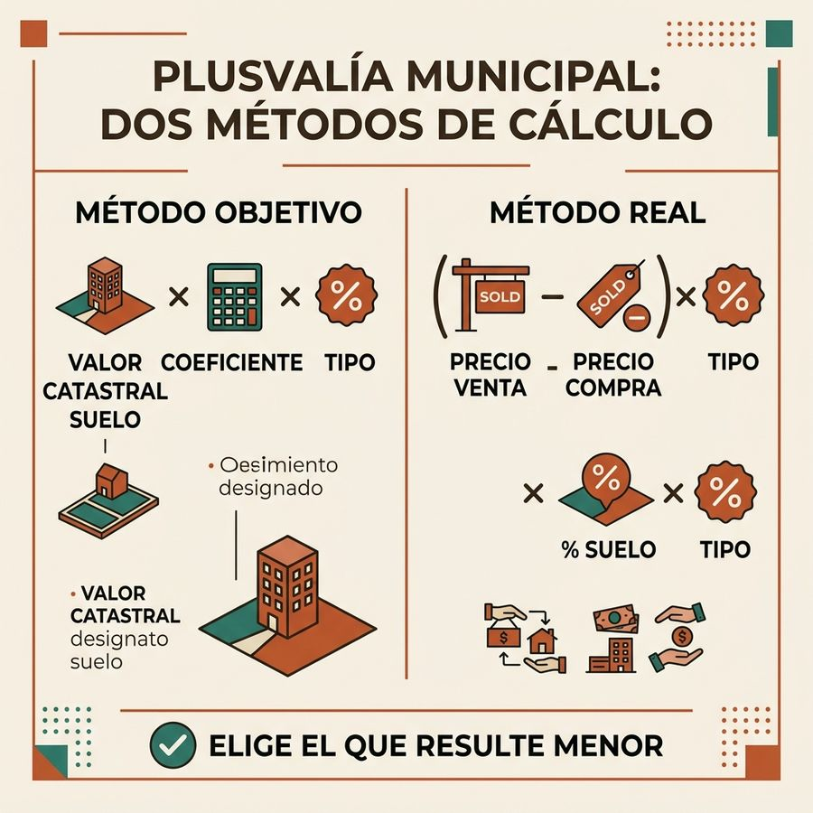

¿Qué es la plusvalía municipal?
El Impuesto sobre el Incremento del Valor de los Terrenos de Naturaleza Urbana (IIVTNU), conocido como plusvalía municipal, grava el aumento de valor que experimentan los terrenos urbanos entre la fecha en que se adquiere un inmueble y la fecha en que se transmite (por venta, herencia o donación).
Es un impuesto local, gestionado por cada ayuntamiento con un tipo máximo del 30%. Se devenga en el momento de la transmisión del inmueble, y tiene plazos muy estrictos para su liquidación.

Los dos métodos de cálculo en 2026
Desde la reforma, el contribuyente puede elegir el método más favorable entre los dos disponibles:
| Método | Cómo se calcula la base | Cuándo conviene |
|---|---|---|
| Objetivo | Valor catastral del suelo × coeficiente aprobado por el Ayuntamiento (varía según años de tenencia) | Cuando la ganancia real es alta y el resultado objetivo es menor |
| Real | Ganancia real = Precio venta – Precio compra (parte proporcional del suelo). Base = Ganancia × % suelo/valor catastral total | Cuando la ganancia real es baja o cuando hay pérdida |
El coeficiente que se aplica depende de los años transcurridos y lo aprueba cada ayuntamiento sin superar el tope estatal. Tabla completa de los 21 tramos con su tope legal →
Coeficientes de la plusvalía municipal vigentes
Si eliges el método objetivo, la base imponible sale de multiplicar el valor catastral del suelo por el coeficiente que corresponda a los años que has tenido el inmueble. Estos son los coeficientes máximos que fija el artículo 107.4 del texto refundido de la Ley Reguladora de las Haciendas Locales: tu ayuntamiento puede aprobar los suyos, pero no puede superarlos.
| Período de generación | Coeficiente máximo |
|---|---|
| Inferior a 1 año | 0,15 |
| 1 año | 0,15 |
| 2 años | 0,14 |
| 3 años | 0,14 |
| 4 años | 0,16 |
| 5 años | 0,18 |
| 6 años | 0,19 |
| 7 años | 0,20 |
| 8 años | 0,19 |
| 9 años | 0,15 |
| 10 años | 0,12 |
| 11 años | 0,10 |
| 12 años | 0,09 |
| 13 años | 0,09 |
| 14 años | 0,09 |
| 15 años | 0,09 |
| 16 años | 0,10 |
| 17 años | 0,13 |
| 18 años | 0,17 |
| 19 años | 0,23 |
| Igual o superior a 20 años | 0,40 |
Ejemplo con los máximos legales. Vendes una vivienda que compraste hace 7 años. El valor catastral del suelo en la fecha de la venta es de 30.000 €. La base imponible por el método objetivo sería 30.000 € × 0,20 = 6.000 €. Si tu ayuntamiento aplica el tipo máximo del 30% que permite el artículo 108 del mismo texto legal, la cuota sería 6.000 € × 30% = 1.800 €. Con un tipo del 20%, serían 1.200 €.
Fuente: texto consolidado del TRLRHL en el BOE, artículo 107.4 del texto refundido de la Ley Reguladora de las Haciendas Locales. Coeficientes máximos. Cada ayuntamiento fija los suyos sin superar estos límites. Los coeficientes se actualizan por norma estatal, normalmente en la Ley de Presupuestos.
Plazos de liquidación
| Tipo de transmisión | Plazo | Quién declara |
|---|---|---|
| Compraventa | 30 días hábiles desde escritura | El vendedor |
| Donación | 30 días hábiles desde escritura | El donatario |
| Herencia | 6 meses (prorrogables a 1 año) | El heredero |
Si no se liquida en plazo, el Ayuntamiento puede girar liquidación de oficio con un recargo del 20% más intereses de demora desde el momento del devengo.
Cómo evitar pagar la plusvalía municipal
- Pérdida acreditada: si el precio de venta es inferior al de compra, aporta ambas escrituras para demostrar que no ha habido incremento real. No hay plusvalía.
- Bonificación herencia vivienda habitual: muchos ayuntamientos aplican hasta el 95% de bonificación para descendientes directos que hereden la vivienda habitual del causante.
- Prescripción: si han transcurrido más de 4 años desde el devengo sin notificación municipal, la deuda puede haber prescrito.
- Errores en el cálculo municipal: si el Ayuntamiento aplicó el método incorrecto o un coeficiente superior al legal, el contribuyente puede impugnar la liquidación.
Plusvalía en herencias 2026
En las herencias, el heredero tiene 6 meses desde el fallecimiento para liquidar la plusvalía (prorrogables a 1 año mediante solicitud motivada). La base imponible se calcula sobre el valor catastral del suelo en la fecha del fallecimiento.
La bonificación por herencia de vivienda habitual, cuando existe, puede alcanzar el 95% de la cuota íntegra. El plazo para solicitarla coincide con el de la liquidación del impuesto. Consulta si tu municipio la contempla en la guía específica.
El tipo de la plusvalía en los municipios de la guía
El tipo de gravamen del IIVTNU lo fija cada ayuntamiento y no puede pasar del 30%. Estos son los que publica el Ministerio de Hacienda para el ejercicio 2025: 49 de 127 municipios aplican el máximo legal.
| Municipio | Tipo de gravamen | ¿En el máximo legal? |
|---|---|---|
| Los 10 tipos más altos | ||
| Barbastro | 30% | Sí |
| Monzón | 30% | Sí |
| Sabiñánigo | 30% | Sí |
| Alcañiz | 30% | Sí |
| Teruel | 30% | Sí |
| Tarazona | 30% | Sí |
| Grado | 30% | Sí |
| Langreo | 30% | Sí |
| Llanes | 30% | Sí |
| Mieres | 30% | Sí |
| Los 10 tipos más bajos | ||
| Binéfar | 18% | No |
| Soria | 18% | No |
| San Javier | 18% | No |
| Illescas | 17% | No |
| O Carballiño | 17% | No |
| Navalmoral de la Mata | 16,2% | No |
| Miranda de Ebro | 15% | No |
| Segovia | 15% | No |
| Redondela | 15% | No |
| Castro-Urdiales | 14,3% | No |
En la ficha de cada municipio publicamos sus 21 coeficientes y su tipo por período de tenencia, con un ejemplo de cálculo. Buscar mi municipio → · Quién aplica el coeficiente máximo →
La base del método objetivo es el valor catastral del suelo, no el valor total del inmueble: en la Sede del Catastro figuran por separado.
Calcula tu plusvalía municipal
Introduce los datos de tu transmisión para calcular la plusvalía municipal por ambos métodos y saber cuál te conviene: